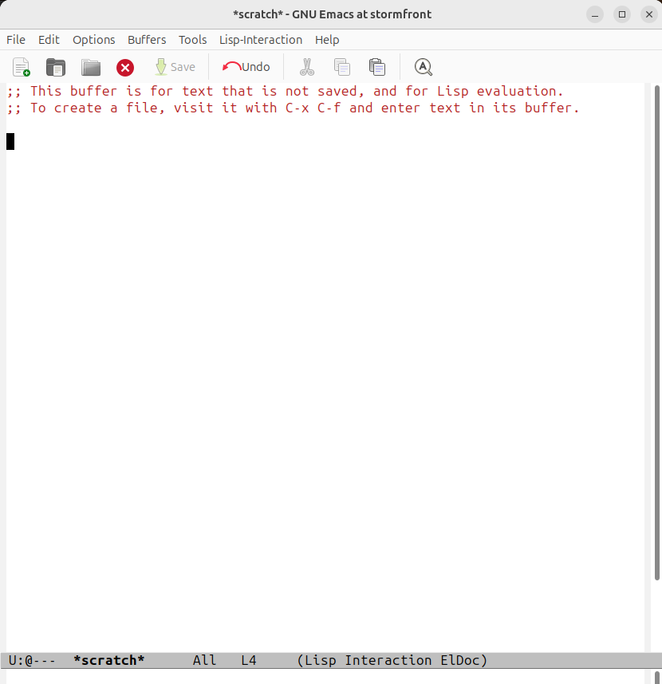
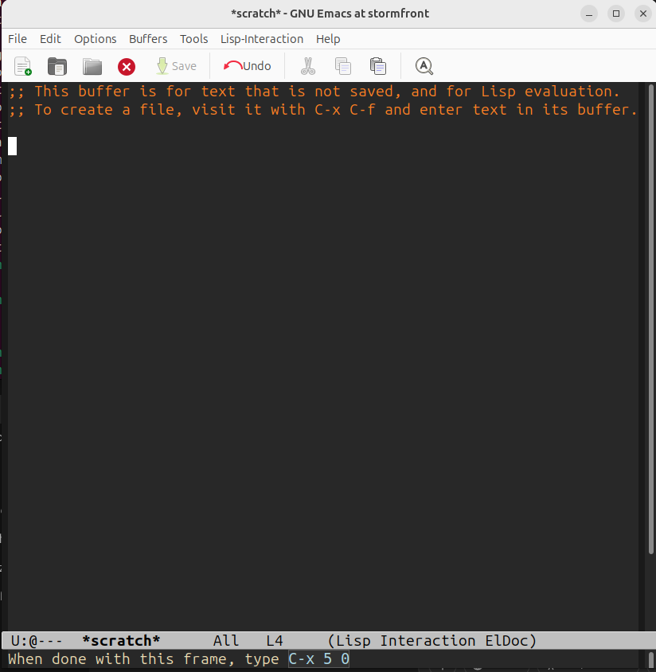

I started with Emacs right out of the box, no customizations. It looked like this:
Not exactly sure how the splash screen got turned off, but no matter, it always got in my way anyway. But I didn't like the white screen (it bothers my eyes), so I changed it to a darker hue with this bit of Emacs Lisp:
(set-face-attribute 'default nil
:height 140 :background "#282828"
:foreground "#ebdbb2")
(set-face-attribute 'cursor nil
:background "#ebdbb2")
This gave me a bit of a better look:
© 2025 by Bill Wear. All Rights Reserved.